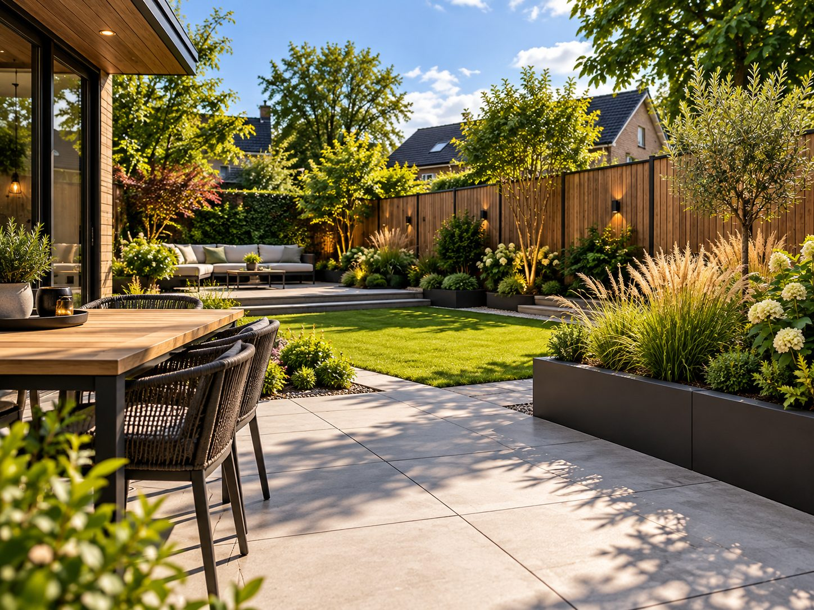
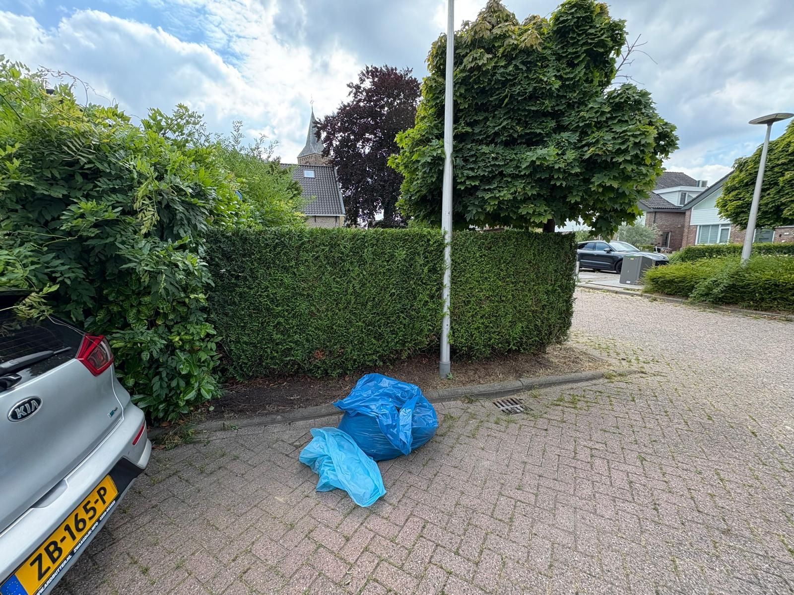
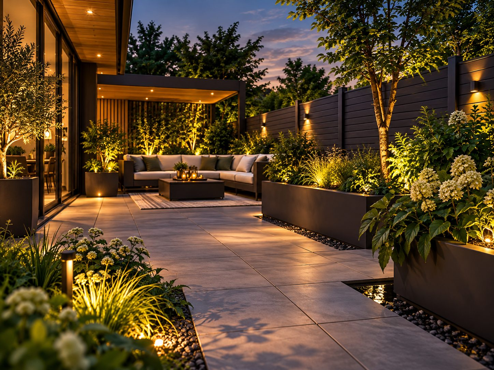
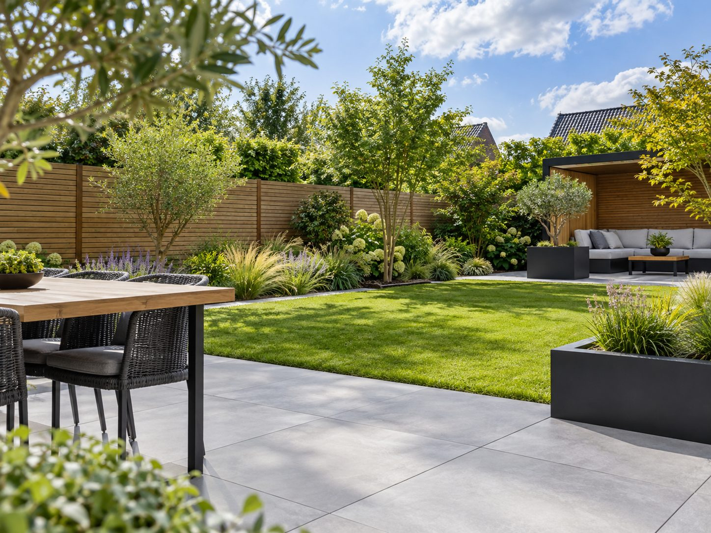
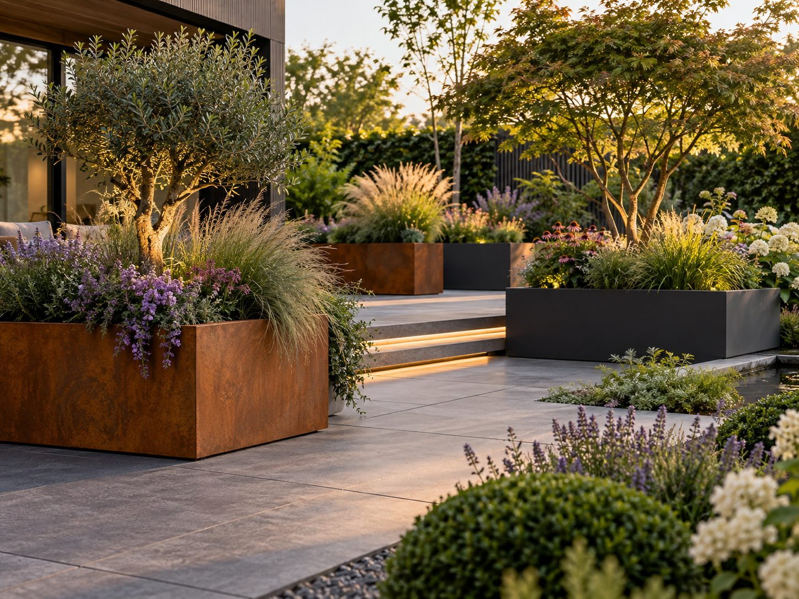

Örnek görsel, tamamlanmış bir proje değildir
Dordrecht bahçe yenileme
Eskimiş bir bahçe bakımlı bir bütüne geri getirildi
Bahçeniz eskidi, ihmal edildi veya yeni bir düzene mi ihtiyaç duyuyor? Bahçeyi temizlikten yeniden düzenlemeye adım adım yenileriz.
- Dordrecht'te ücretsiz keşif
- Nelerin dahil olduğu ve olmadığı belli bir teklif
- Malzeme tek başına veya montajla birlikte
- Kendi işimiz, gerçek fotoğraflar
Bahçe yenileme neyi kapsar?
Bahçe yenileme, mevcut bir bahçenin kısmen veya tamamen yenilenmesidir: eski bitkilendirme ve zeminin kaldırılması, toprağın onarılması ve bahçenin güncel bir düzene göre yeniden düzenlenmesi.
Bu kimin için?
Yıllardır ilgilenilmemiş bir bahçesi olan, taşındıktan sonra kendilerine uymayan bir bahçeyi devralan ya da teknik olarak eskimiş bir bahçesi olan (çöken karolar, çıplak noktalar, kapanan borderlar) ev sahipleri için.
Bu hangi sorunları çözer?
- Yıllardır kapsamlı bir şekilde ele alınmamış bir bahçe.
- Çökmüş zemin veya dağınık bir düzen.
- Artık nasıl kullanmak istediğinize uymayan bir bahçe.
Hangi işleri yapabiliriz?
- Eski bitkilendirme veya zeminin temizlenmesi ve kaldırılması
- Toprağın onarılması ve iyileştirilmesi
- Border, çim ve yolların yeni düzeni
- Eskimiş zemin veya çitin değiştirilmesi
- İsteğe göre yeniden bitkilendirme
Yaklaşımınızı seçin
Tam yenileme
Eski zemin, bitkilendirme ve ayırıcı çıkar, yeni bir düzen gelir.
Kısmen yenileme
Yalnızca fark yaratan kısımlar; iyi olan korunur.
Önce toparlama
Budama, yabani ot temizleme ve onarım; ara adım olarak veya yatırım yapmadan önce danışmanlık olarak.
Teklifinizde neler var, neler standart değil?
Teklifte her zaman belirtilir
- Her kalem için miktar, malzeme ve birim (m², m¹, adet)
- İşçilik saat başına, çalışan başına KDV hariç sabit 60,00 € saat ücretiyle
- Taşıma, hazırlık ve kazı işlerinin dahil olup olmadığı
- Hangi kalemlerin hâlâ tahmini bedel veya 'talep üzerine' olduğu ve nedeni
- Sonradan sürpriz yaşamamak için kendinizin neleri hazırlayacağı
Standart olarak dahil değil
- İzinler ve harçlar (gerekirse siz ilgilenirsiniz ya da önceden ayrıca anlaşırız)
- Elektrik bağlantıları: bunları yetkili bir elektrikçiye yaptırın
- Zemindeki öngörülemeyen engellerin kaldırılması (moloz, eski temeller, kökler)
- Kablo ve boru çalışmaları ile gizli kusurlardan kaynaklanan hasarların onarımı
- Teklifte açıkça belirtilmemişse toprak veya bahçe atıklarının taşınması
Teklif esastır: her kalemde tam olarak nelerin dahil olduğu ve nelerin olmadığı yazar. Emin değilseniz onay vermeden önce bize sorun.
Bir sipariş nasıl ilerler?
Envanter
Neyin kalabileceğine ve neyin değiştirilmesi gerektiğine bakarız.
Plan ve teklif
Bir yenileme planı ve net teklif hazırlarız; istenirse aşamalı.
Uygulama
Yenilemeyi adım adım, bakımlı bir sonuca kadar yürütürüz.
Fiyatı hangi etkenler belirler?
Bahçe yenileme fiyatı şunlara bağlıdır:
- Yenilemenin kapsamı (kısmi veya komple)
- Eski malzemelerin ve toprağın taşınması
- Zemin, çit veya bitkilendirme için yeni malzemeler
- Zeminin durumu
Yenileme projeleri bahçeden bahçeye çok değişir. Keşiften sonra bütçenizi yayabilmeniz için gerekirse aşamalara bölünmüş, size özel bir teklif alırsınız.
Neden Sealcleaning?
Sealcleaning, yılların uygulama deneyimine sahip ustaların desteklediği, Dordrecht merkezli genç ve istekli bir bahçıvanlık şirketidir. Kısa hatlarla çalışırız: işi yapan kişiyle doğrudan konuşursunuz ve iş ile malzemeler hakkında baştan net anlaşmalar yaparız.
Bizi daha yakından tanıyınUygulamadan
İlgili projeler

Sık sorulan sorular
Bahçe yenileme hakkında sorular
Yenileme aşamalı yapılabilir mi?
Evet, bütçenize veya planlamanıza daha uygunsa aşamalı bir yaklaşımı memnuniyetle konuşuruz.
Eski zemini kaldırmak gibi yıkım işlerini de yapıyor musunuz?
Evet, eski zemin, çit veya bitkilendirmenin kaldırılması yenilemenin bir parçasıdır.
Yeni bir düzen konusunda danışmanlık verebilir misiniz?
Evet, istediğiniz kullanım ve bakıma uyan bir düzen konusunda memnuniyetle düşünürüz.
İlham
Yenilenmiş bir bahçe için ilham
Farklı stil ve bitişlerden ilham alın. Olanakları birlikte konuşuruz ve kesin malzemeleri önceden sizinle netleştiririz.

Yeniden düzenlenen bir bahçe 
Yeni teras ve çim 
Bitki kasaları
Örnek görseller: olası uygulamalara örnektir; Sealcleaning'in tamamladığı projeler değildir ve kesin ürün garantisi vermez. Daha fazla ilham · Fikrinizi konuşalım